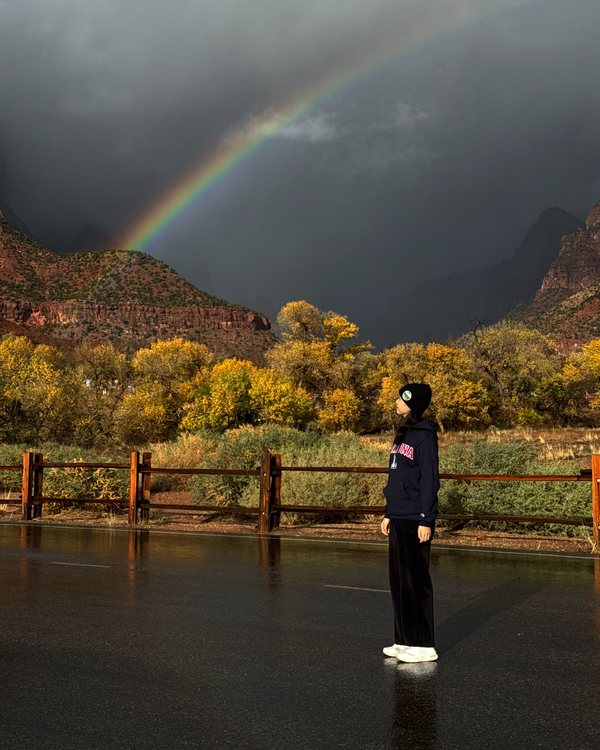
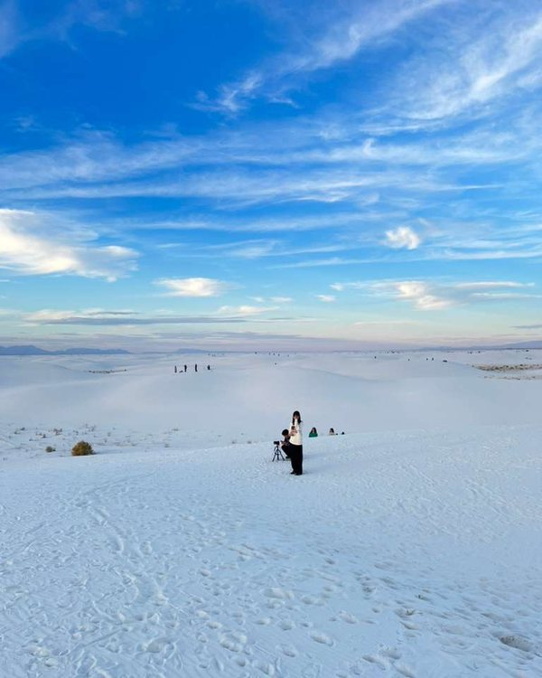
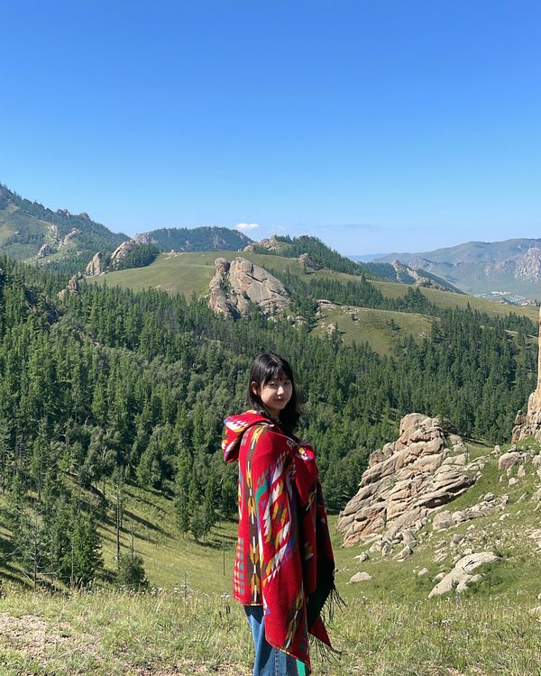
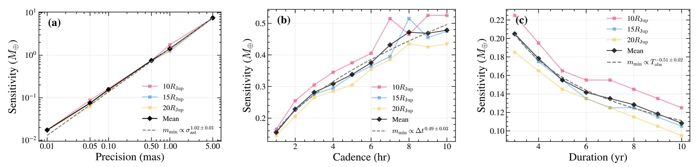
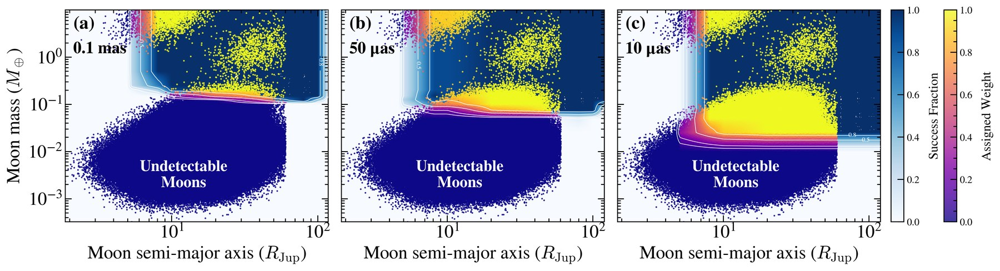
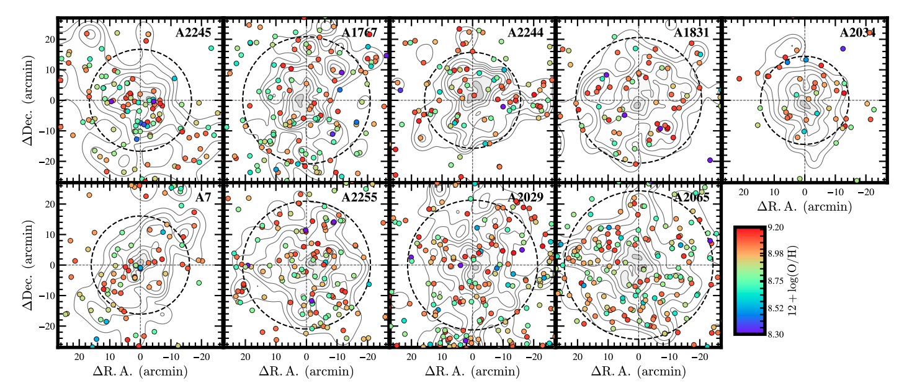

Hi! I'm Sumin, an undergraduate at Seoul National University studying Earth Science Education and Astronomy.
My research so far has covered quite a range of scales. At SNU, I've measured gas-phase metallicities for thousands of galaxies in and around massive clusters. During an exchange semester at the University of Arizona, I modeled how moons around directly imaged exoplanets could be detected from the tiny wobbles they cause in their host planets.
Each project added something to my toolkit: spectroscopic analysis, statistics on large surveys, and simulation-based forecasting. These days I'm most drawn to exoplanets, especially how direct imaging and spectroscopy can tell us what distant planets are really like.
Research Interests
Exoplanet direct imagingHigh-contrast imaging & AOExoplanet characterizationExomoonsInstrumentationGalaxy spectroscopyEarth as a planet
Honors & Awards
Excellence Poster Award (top 3 of ~100)
114th KAS Fall Meeting · 2026
Dean's List with Distinction
University of Arizona · 2025
Korea–U.S. Advanced Industry Youth Exchange Scholarship
MOTIE & KIAT · 2025
College of Natural Sciences Undergraduate Research Fellowship (twice)
Seoul National University · 2024–2025
Outside Research
I love exploring corners of nature I've never seen before, usually on a hiking trail. I also enjoy working out and playing the guitar.

Zion, UT

White Sands, NM

Mongolia
Research
My research has spanned galaxy clusters, the largest gravitationally bound structures in the universe, and exomoons around α Centauri A, with an earlier project on active galactic nuclei (AGN). Looking ahead, I'm most interested in exoplanets, especially the search for Earth-like worlds.
Aug 2025 – Present · University of Arizona
Detecting Exomoons around Directly Imaged Planets
Using astrometric simulations, I studied how small a moon we could detect around a directly imaged planet, and how likely a detection is for the α Centauri A planet candidate.
Astrometric precision dominates the detection limit.
Detection probability reaches ~35–40% at 10 µas across all population models.
Next-generation missions could reach sub-Earth-mass moons.

Minimum detectable moon mass vs. precision, cadence and duration.

Detectable moons at 0.1 mas, 50 µas and 10 µas precision.
Advisor: Prof. Kevin Wagner · First-author paper submitted to AJ; AAS 249 talk; AAS 247 poster; KAS 114 poster
Nov 2024 – Present · Seoul National University
The Mass–Metallicity Relation of Galaxy Clusters
I built a spectroscopic pipeline for ~175,000 galaxies in nine massive local clusters and the field, and found that cluster galaxies are more metal-rich than field galaxies, a hint of environmental effects.

Gas-phase metallicities of galaxies in nine massive clusters.